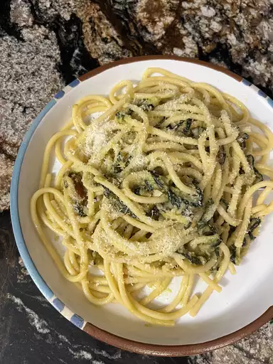

Spaghetti alla Nerano

Description
A fabulous dish that will transport you to the Amalfi Coast!
Fresh pasta, courgettes and a lot of love! My wedding day recipe and Stanley Tucci's favourite meal
Ingredients
- 1 large courgette
- half a cup of olive oil
- 2 garlic cloves
- 150g spaghetti
- half a cup of provolone cheese
- basil to taste
- salt and pepper to taste
Steps to make
- Place zucchini slices on a plate and let dry for 1 hour.
- Heat 1/2 cup oil in a skillet over medium heat. Working in batches, add zucchini slices and deep fry until brown, 10 to 15 minutes per batch. Drain on paper towels and allow to cool, then mash 1/3 of the fried zucchini.
- Heat 3 tablespoons olive oil in a large saucepan over low heat. Add garlic cloves; watch carefully and simmer until cloves are a light golden brown and oil is infused with garlic flavor, 15 to 20 minutes. Stir in mashed zucchini, then add zucchini slices.
- Meanwhile, bring a large pot of lightly salted water to a boil. Cook spaghetti in the boiling water, stirring occasionally, until tender yet firm to the bite, about 12 minutes. Drain spaghetti, reserving some cooking water.
- Add spaghetti and provolone cheese to the saucepan. Toss with zucchini and add hot pasta water until the sauce becomes creamy. Mix in basil and season with salt and pepper.
Home